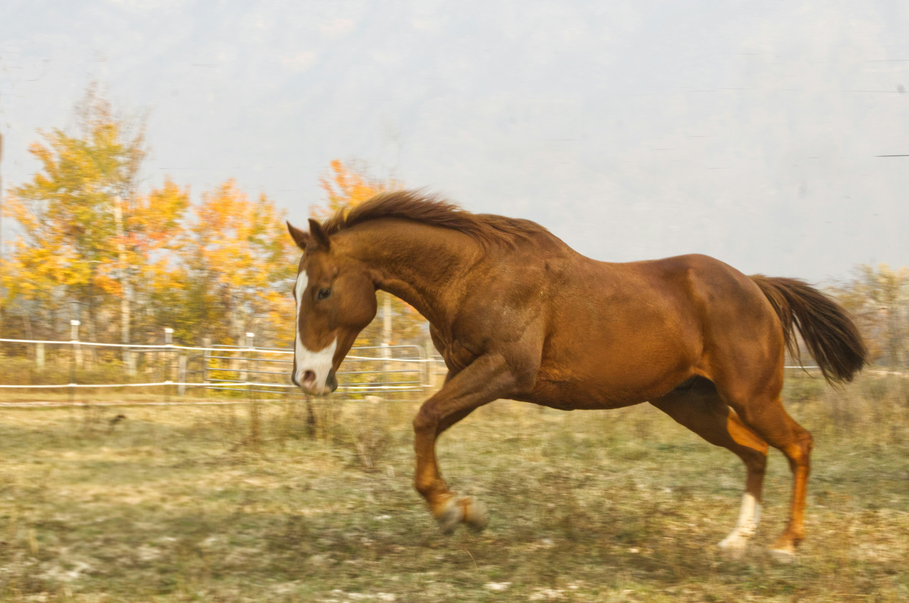
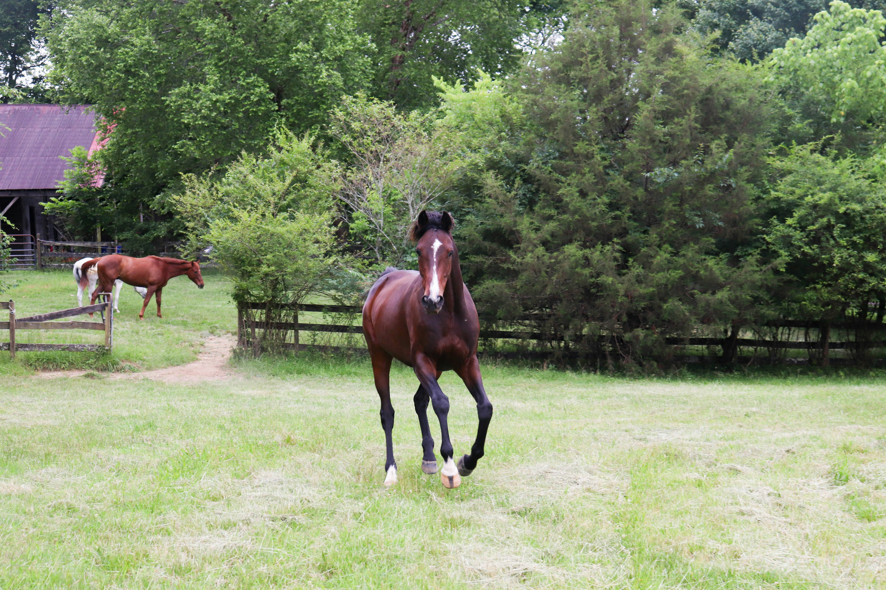
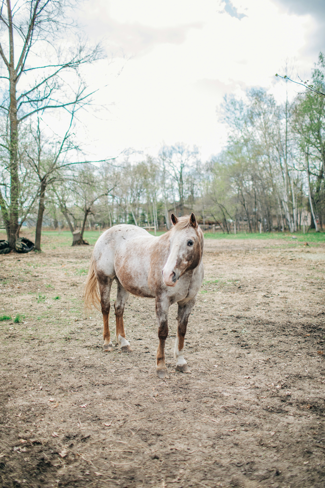
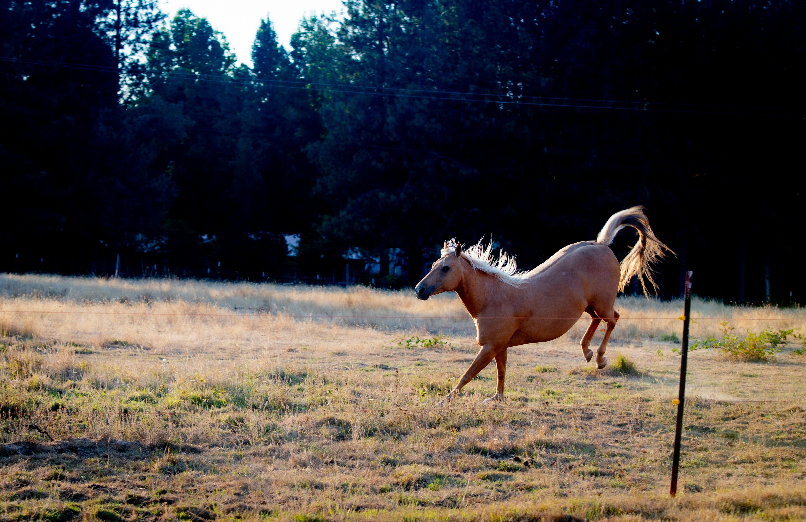
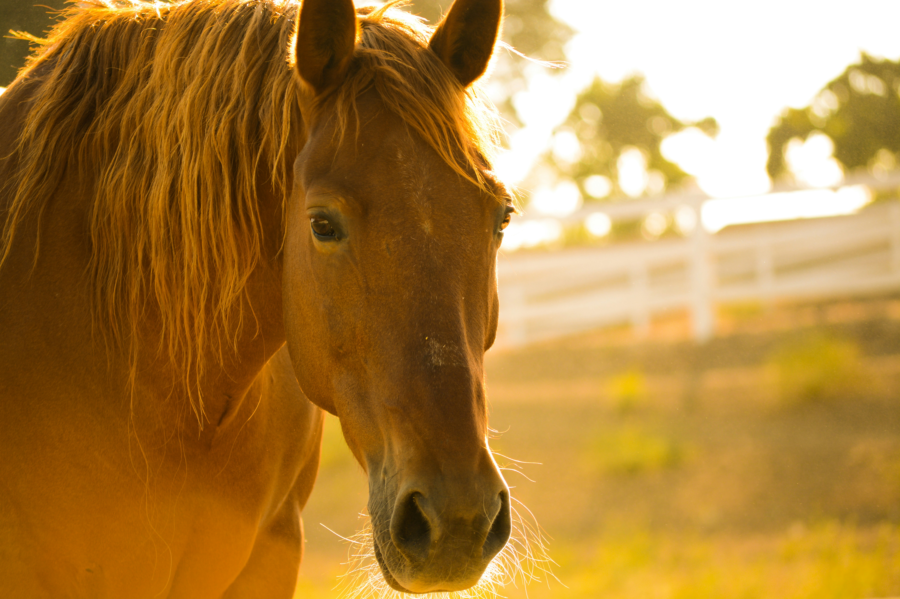
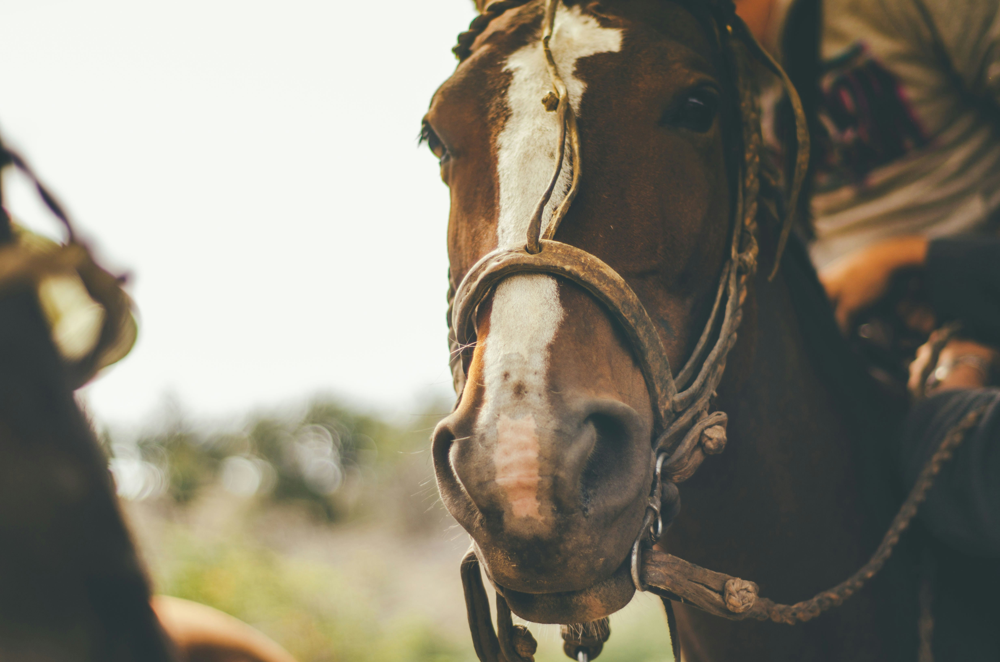

Common Horse Breeds

Arabian Horse
The Arabian horse is one of the oldest and most recognizable horse breeds in the world.
Read More
American Quarter Horse
Most popular in the U.S.—around 42% of U.S. horses are Quarter Horses.
Read More
Thoroughbred
Thoroughbreds are used mainly for racing, but are also bred for other riding disciplines such as show jumping, combined training, dressage, polo, and fox hunting.
Read More
Appaloosa
The Appaloosa is an American horse breed best known for its colorful spotted coat pattern.
Read MoreFamous Horses in History
Bucephalus
Warhorse of Alexander the Great; notably untameable until Alexander calmed him by turning him toward the sun.
More about Bucephalus
Seabiscuit
Underestimated early in his career, rose to fame during the Great Depression as an inspiring racing champion.
More about Seabiscuit
Man o’ War
Considered among the greatest American racehorses ever. Won 20 of 21 races in 1919–1920.
More about Man o’ War
Secretariat
Achieved the Triple Crown in 1973, setting records in all three races, including a 31-length Belmont Stakes win.
More about Secretariat